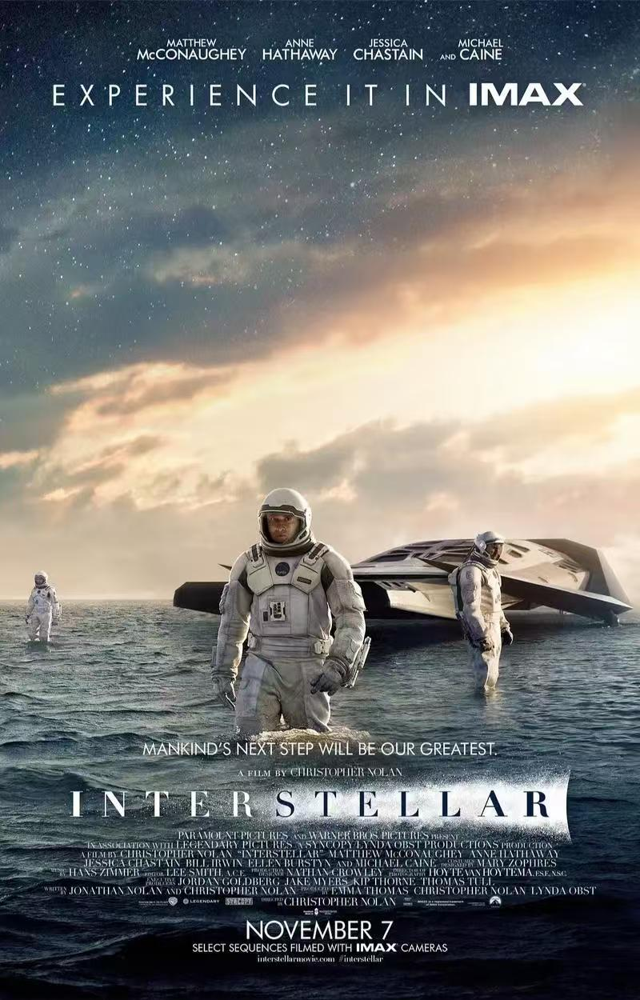
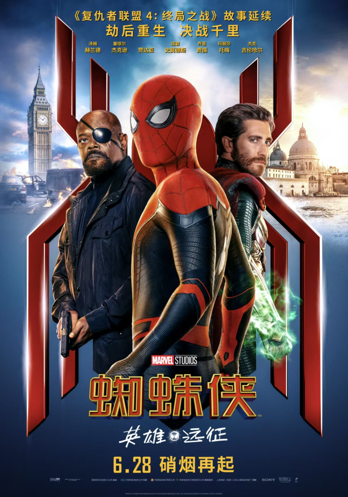
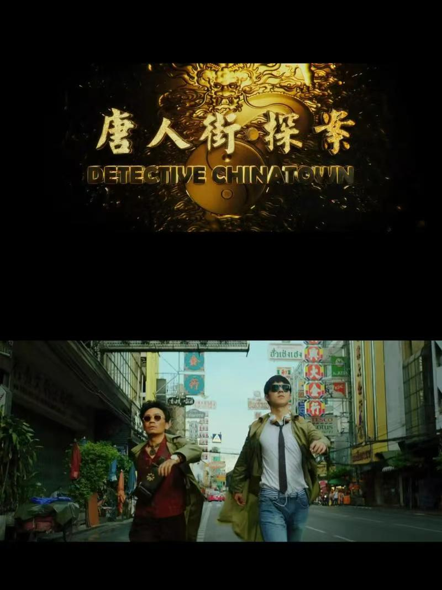

电影
我的观影单

诺兰把「时间」拍成了一封跨越维度的信——父亲对女儿的爱， 最终以引力的形式穿透了黑洞。 喜欢它的地方不在于硬核的物理设定，而在于那种渺小与宏大并存的震撼感， 看完之后很久都回不过神来。
每一个密室都是一道精心设计的谜题， 节奏紧绷、机关层层递进，看的时候全程屏住呼吸。 比起纯吓人的恐怖片，更喜欢这种靠智力博弈制造紧张感的类型， 悬念到最后一刻都没有松掉。
叙述视角像一把刀，随着真相一层层剥开，每次以为摸到底了， 底下还有底。结尾的反转让整部片子重新活了一遍， 是那种看完会想立刻回头验证每一个细节的电影。

彼得·帕克只是个想好好放假的高中生，结果假没放成， 世界又得他来救。喜欢这部里他身上那种「普通少年」的真实感， 会害怕、会逃避，但最后还是选择承担—— 超能力只是外衣，里面包的是一个很好的人。

推理包裹在喜剧外壳里，看的时候一直在笑， 但笑完之后案子的逻辑链又是严丝合缝的。 唐仁和秦风这对组合太有趣了，一个天赋异禀一个无厘头， 反而碰出了意想不到的化学反应。